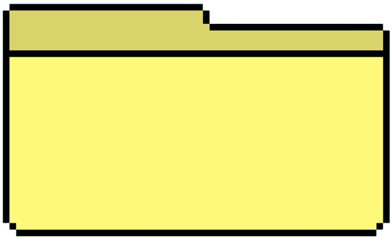

Site Navigation Guide
About Me

My projects

Welcome to my humble abode! Here you will find basic instructions on how to navigate this small pocket of cyberspace!
My name is Devin. I am a Computer Science undergrad at the wonderful Appalachia State University and an aspiring game developer. Welcome to my website!
This website is where I will both share/store my projects and display my work, but this section is just about me! So if you don't care about that and just want to see my work, please navigate to "My projects" and give it a click! Otherwise, read on!
As is evident by this frankly overkill portfolio site, I am very passionate about programming. I find it to be extremely enjoyable, and am happy to take any excuse to do it. My skills are pretty basic right now but I'm always trying to learn. However, for now, the things I can (generally) offer are:
But those are just my skills. I'm passionate about a lot of other things too, such as:
This website will be pretty barren for a while, but stay tuned! I plan to eventually fill it out when I've got the time.